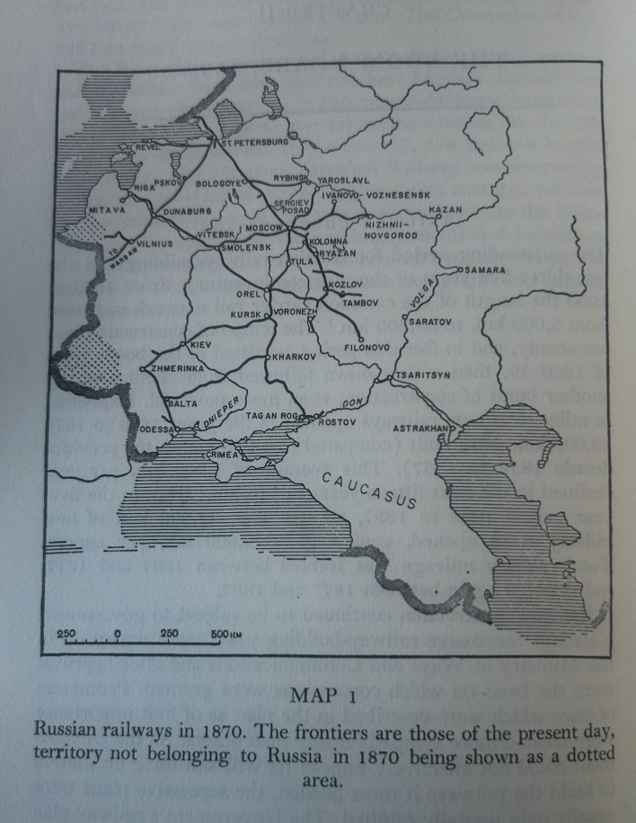
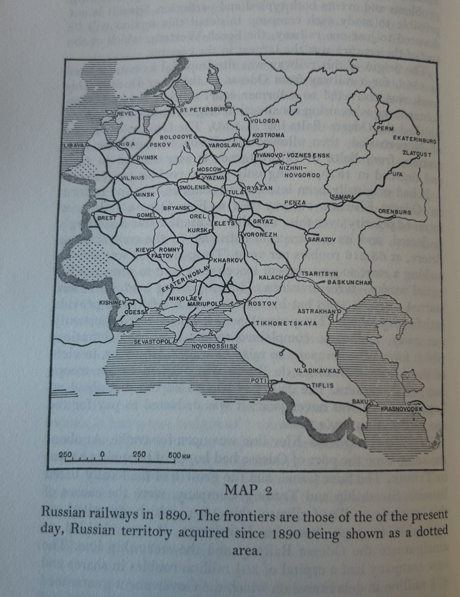

The Development of the Russian Railway System

The expansion of Russia’s railway system was marked by its breakneck speed, catalyzed from the beginning by a myriad of economic and strategic goals. As Haywood argues, even during the reign of Tsar Nicholas I (1825–1855), which is often viewed as a “frozen Russia” negatively contrasted with the more active reign of Alexander II (1855–1881), “the Tsar and his government had no ideological ambivalence toward such a large-scale technological innovation…it was desired that the railway should produce significant changes in the economic life of Russia…that existing production and trade patterns would be helped to greater efficiency and greater production of wealth…[and] contribute to the development of new branches within the economy, notably heavy industry” (Haywood xix).
In 1837, the Tsarskoe Selo Railway ran 17 miles from St. Petersburg to the imperial residences of Tsarskoe Selo and Pavlovsk. However, because it had little impact on the political, economic, or social life of the Russian Empire, Russia did not truly enter the “Railway Age” until Nicholas I decided to build the St. Petersburg-Warsaw Railway in 1840 (Haywood 2). The onset of the Crimean War further accelerated the Russian Railway System’s expansion, evidenced by the fact that “by 1855 only 653 miles were in operation” but “from 1866 to 1900 the length of the common carrier rail network increased from 5,000 km. to 53,200 km” (Westwood 59). In addition to the railway’s importance to conducting war, which Alexander III’s war minister later claimed to be “the strongest and most decisive element of war,” the railway also effected a greater interconnectivity across Russia due to its sheer speed (Westwood 59 & 65). As Schivelbusch writes, the speed with which travelers could move through Europe across vast networks of railways dramatically changed people’s relationship to travel; gone was the need to travel for days to reach one’s destination across Europe, as with the advent of the railroad, the traveler “became, as noted in a popular metaphor of the century, a mere parcel” that moved “at seventy-five miles an hour [and] ‘would have a velocity only four times less than a cannon ball’” (Schivelbusch 54). This is evidenced in the sentiment around the Russian railway system, with “voices stressing the importance of steam engines and railway tracks for the consolidation of Russia’s territorial integrity,” as well as in the growing list of people who could make use of the railroad, and the equally growing list of reasons to do so (Schenk 234).
In contrast to the benefits and promise of the railway system in Russia, a whole slew of problems and anxieties accumulated around its expansion. Just as the railroad was used for travel and administrative purposes, “Russian authorities realised that the new means of transportation could also be used by opponents of the autocratic and imperial order,” notably in the growing threat of terrorism and dissidence as “railroads served political activists working in conspiracy as an indispensable network for communication and transportation” (Schenk 234, 241, 245). Their spread also increased the incidence of accidents and their scale, as well as other issues further downstream from the pace of expansion. At the beginning of the Turkish War in 1877, these issues could be readily felt as “the carefully made mobilization plan was spoiled in its execution by the late arrival of locomotives which should have been drafted from less important railways. There were delays, trains had to be dispatched one after the other separated only by time intervals, and some cavalry units had to be de-trained and sent towards Bessarabia on their own horses” and the more harrowing reality of “wounded [that] began to be ‘stacked like logs’ at the Romanian frontier stations, until freight cars were introduced for this service” (Westwood 101). The Telegul disaster of 1875, a train derailment which resulted in the deaths of around one hundred recruits, illustrates the relationship between the pace of the growth of the railway system and the dangers it made possible; as a result of an oversight by two officials, the train derailed and caught on fire, “but as both were needed to arrange urgent traffic their sentences were never properly served” (Westwood 101).
Olga Malinova-Tziafeta writes about how “writers intentionally set their scenes in train cars because they brought representatives from all social classes face to face,” but also of the influence it had on “passengers’ feelings and emotions to a large degree” (Malinova-Tziafeta 861). As it relates to Anna Karenina, Tolstoy’s own view of the railway system’s expansion falls more squarely under the negative category. One might point to the many scenes, from Anna’s first encounter with Vronsky to her eventual suicide, which reflect the historical context of a new, fast, and dangerous mode of transportation around which those scenes took place. For examples of the negative view of the railway system’s expansion, one could look from the sparse account of Levin’s own travel by train to his estate — in which “he talked to the other passengers in his compartment about politics, about the new railways, and just as in Moscow, he was overwhelmed by a confusion of concepts, dissatisfaction with himself, and shame about something” (94) — to Anna’s stormy and emotionally turbulent return to St. Petersburg (100–106), to the carriage full of “poor military men” on their way to fight in the Turkish War (781), where “one doesn’t need letters of introduction in order to die” (784). The railway system’s expansion was the occasion for so much misfortune, confusion, and tragedy to occur in the novel.


Works Cited
- Haywood, Richard Mowbray. Russia Enters the Railway Age, 1842-1855. East European Monographs, 1998. East European Monographs 493.
- Malinova-Tziafeta, Olga. “On the Path to Russian Modernity.” Kritika: Explorations in Russian and Eurasian History, translated by William Tyson Sadleir, vol. 19, no. 4, 2018, pp. 861–66. DOI.org (Crossref), https://doi.org/10.1353/kri.2018.0049.
- Schenk, Frithjof Benjamin. “Attacking the Empire’s Achilles Heels: Railroads and Terrorism in Tsarist Russia.” Jahrbücher Für Geschichte Osteuropas, vol. 58, no. 2, 2010, pp. 232–53.
- Schivelbusch, Wolfgang. “Panoramic Travel.” The Railway Journey: The Industrialization of Time and Space in the Nineteenth Century, University of California Press, 2014, pp. 52–69.
- Westwood, J. N. A History of Russian Railways. George Allen and Unwin Ltd., 1964.